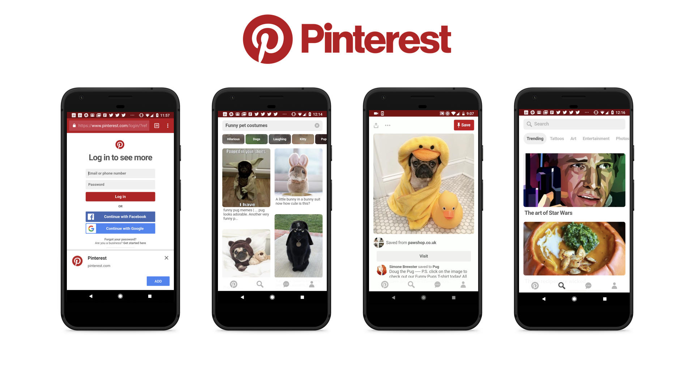
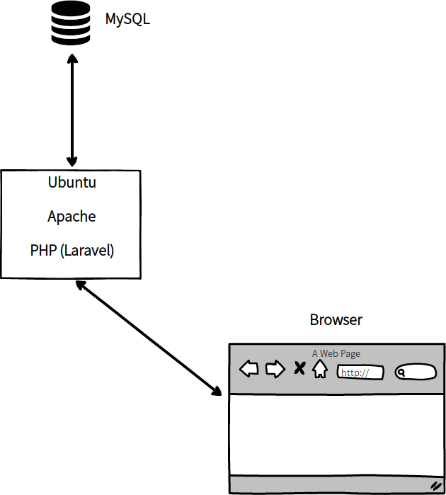
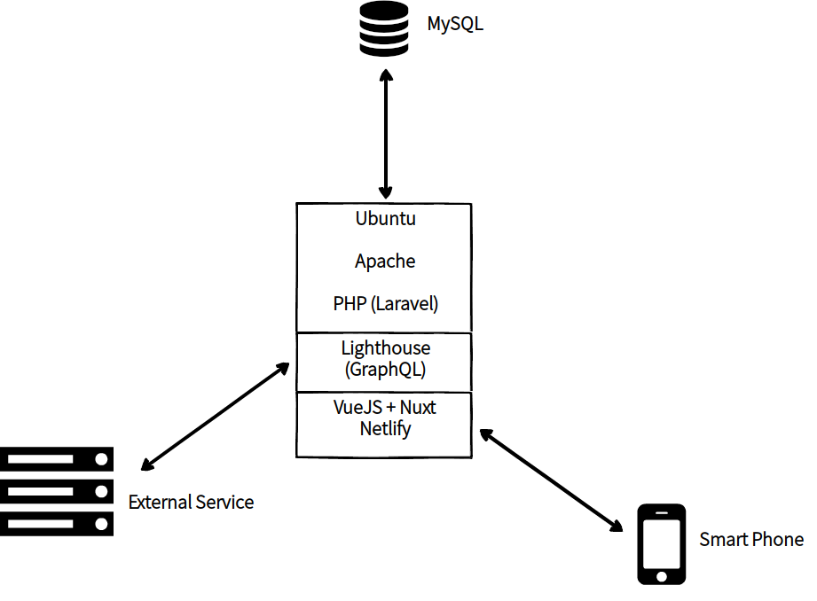
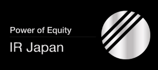
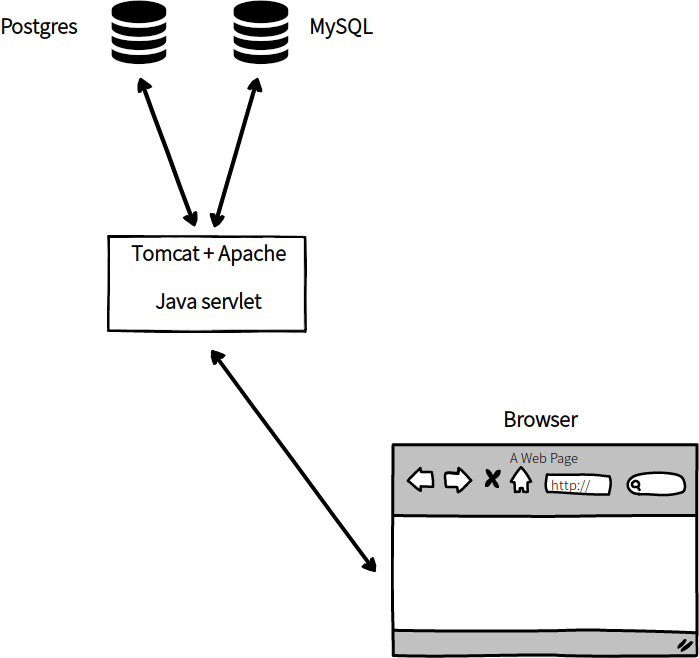
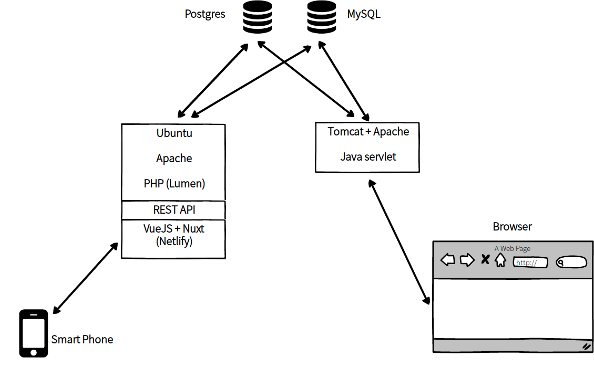
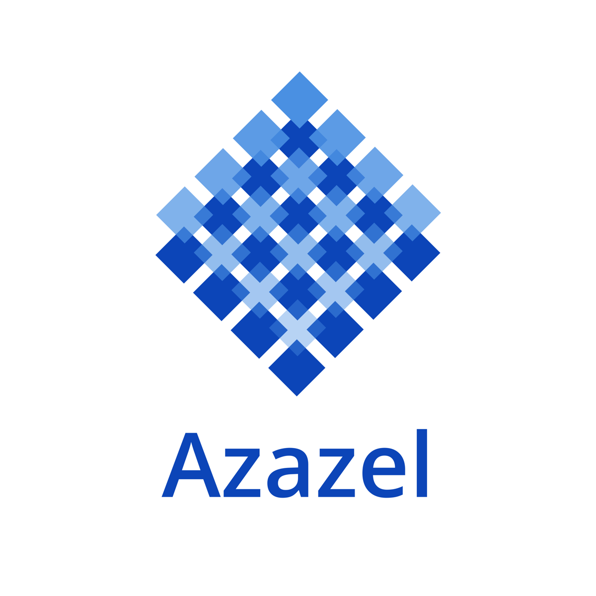
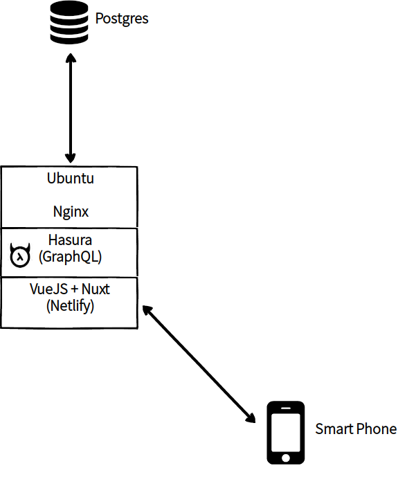

ビジネスソリューションとしてのPWA
Takeshi Amano
PWA night vol.9
2019-10-16
天野の紹介
広島出身
カナダの大学卒業
Gengoの初期メンバー
PayPalのエンジニア
東欧のパートナーとオフショア開発
世界の事例紹介
事例#A
モバイルサイト -> PWA
モバイルサイトのコンバージョンレート 1%
Reactで3ヶ月でローンチ
PWA版をPinterest LightとしてAndroid Storeで配信

事例#B
Tinder
Android app 30MB -> PWA 2.8MB
React + Reduxで実装
3ヶ月でローンチ
PCでもTinderできるようになった
事例#C
Vue Storefront
VueでPWAのecommerceサイトが作れる
オープンソースプロジェクト
Magentoを始め10ほどのECバックエンドと連携可
Adyen, Prismic, Algolia, Stripeなどとのインテグレーション
事例#D
Forbes
ロード時間：モバイル 6.5秒 -> PWA 2.5秒
セッション毎のページ数65%アップ
直帰率20%減
AMPも導入して更に高速化
ネイティブアプリよりもPWAの方がセッション時間が長い
その他のPWA事例
pwastats.com
appsco.pe
PWA周りの話
クライアントワークが増えてきた
話すフェーズから作るフェーズに
技術の選択肢も多い
エンジニアは相変わらず少ない
作りたいクライアントさん ＞ PWA作れるベンダー
天野がやっている事例紹介
事例#1
Rokes Commons Exchange
ビジネスモデル
暗号通貨取引所運営
新しい経済圏を構築
クライアントさんの課題
スマホ向けのUIの改善
外部のサービスから連携したい
現状の技術スタック
PWA用の技術スタック
事例#2
IR Japan

ビジネスモデル
IR情報を企業に提供
上場に関するコンサルティング
クライアントさんの課題
ユーザーさんにスマホで手軽に情報を提供したい
IR情報の一部だけを提供するPWA
現状の技術スタック
PWA用の技術スタック
事例#C
ビジネスモデル
不動産のオーナーと賃貸者を直接つなぐ
不動産業界の無駄をぶっ壊す
新規サービス
クライアントさんの課題
スマホ手軽に物件検索
パソコンを使っているユーザーは想定していない
PWAの技術スタック
ありがとうございました
お仕事のご相談もお願いします
amano@ikedayama.jp
https://twitter.com/moksahero
https://dev.to/moksahero